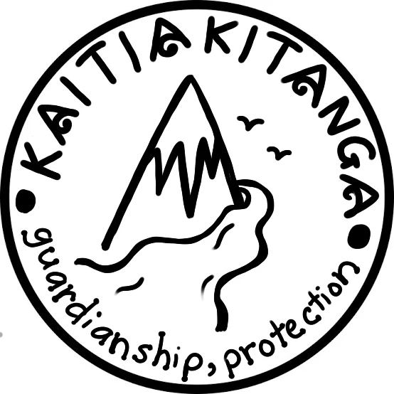
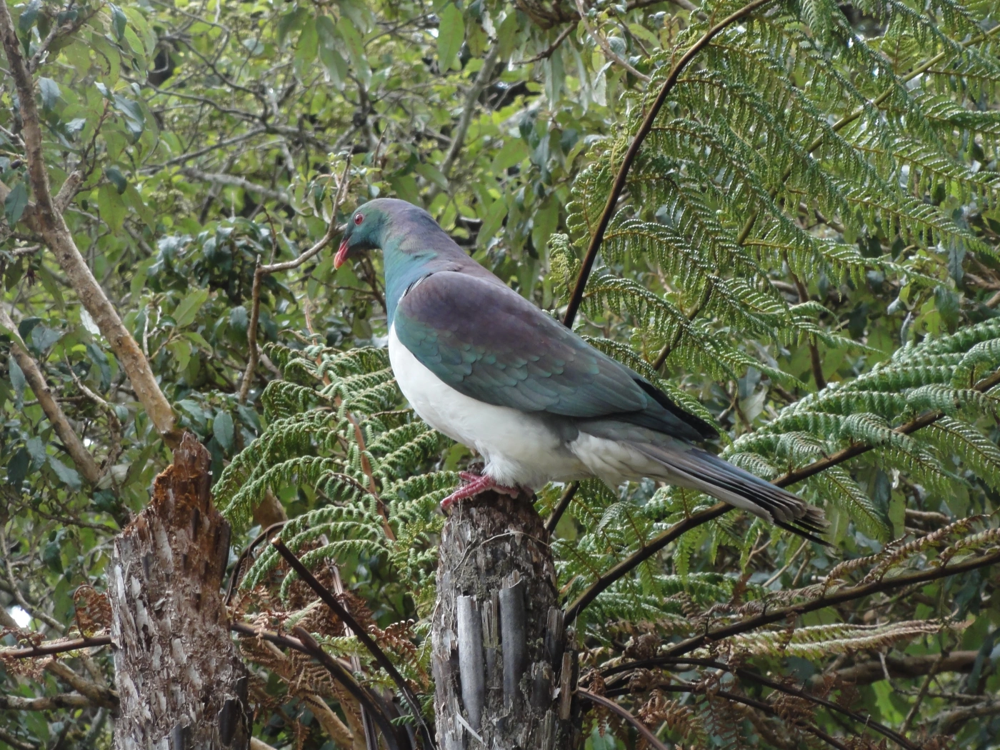

Kaitiakitanga is a
Māori concept that means
guardianship, protection, or stewardship, e
specially over the natural environment.
It reflects a deep spiritual and cultural relationship between
Māori and the land and all living things.


Relating to Pest Control Solutions:
Pests like possums, rats, stoats,
and invasive plants are major threats to Aotearoa's
native ecosystems. They harm native birds, trees,
and biodiversity, which Māori consider taonga. Pest control, when
approached through the lens of kaitiakitanga, is not just about killing
pests — it's about restoring balance and protecting sacred natural systems.
Examples of how they connect:
Protecting native species:
Kaitiakitanga supports pest control efforts that help regenerate
populations of native birds like kiwi, kōkako, and kererū.
Cultural responsibility: Māori may be involved in pest control as a way of
fulfilling their role as kaitiaki of their territory.
Sustainable methods: Pest control aligned with kaitiakitanga avoids harmful
toxins or short-term fixes, and prefers ethical,
long-term solutions that maintain ecosystem health.
Community-based conservation: Many iwi and hapū-led conservation
projects use pest control as part of broader environmental restoration
based on Maori traditions